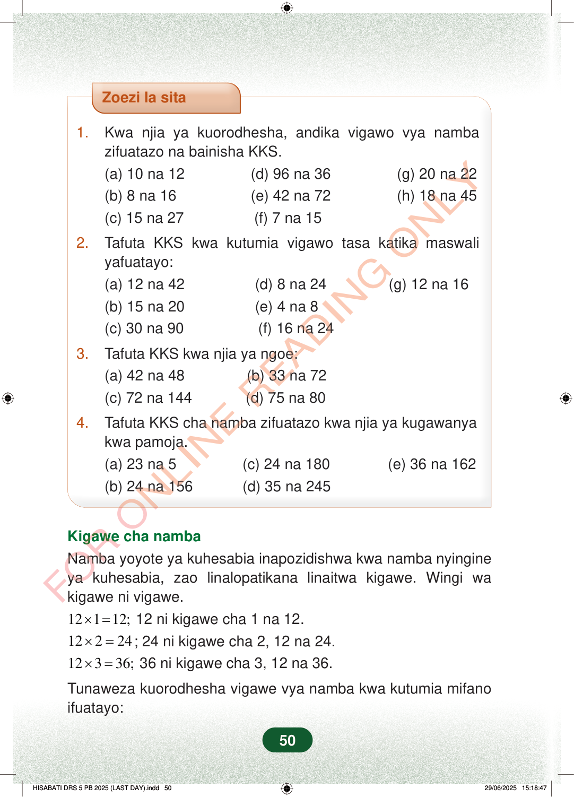

Zoezi la sita1.Kwa njia ya kuorodhesha, andika vigawo vya nambazifuatazo na bainisha KKS.(a) 10 na 12 (d) 96 na 36 (g) 20 na 22(b) 8 na 16 (e) 42 na 72 (h) 18 na 45(c) 15 na 27 (f) 7 na 152.Tafuta KKS kwa kutumia vigawo tasa katika maswaliyafuatayo:(a) 12 na 42 (d) 8 na 24 (g) 12 na 16(b) 15 na 20 (e) 4 na 8(c) 30 na 90 (f) 16 na 243.Tafuta KKS kwa njia ya ngoe:(a) 42 na 48 (b) 33 na 72(c) 72 na 144 (d) 75 na 804.Tafuta KKS cha namba zifuatazo kwa njia ya kugawanyakwa pamoja.(a) 23 na 5 (c) 24 na 180 (e) 36 na 162(b) 24 na 156 (d) 35 na 245Kigawe cha nambaNamba yoyote ya kuhesabia inapozidishwa kwa namba nyingineya kuhesabia, zao linalopatikana linaitwa kigawe. Wingi wakigawe ni vigawe.12112;×=12 ni kigawe cha 1 na 12.12224×=; 24 ni kigawe cha 2, 12 na 24.12336;×=36 ni kigawe cha 3, 12 na 36.Tunaweza kuorodhesha vigawe vya namba kwa kutumia mifanoifuatayo:50
Zoezi la sita
1. Kwa njia ya kuorodhesha, andika vigawo vya namba zifuatazo na bainisha KKS. (a) 10 na 12 (d) 96 na 36 (g) 20 na 22 (b) 8 na 16 (e) 42 na 72 (h) 18 na 45 (c) 15 na 27 (f) 7 na 15
2. Tafuta KKS kwa kutumia vigawo tasa katika maswali yafuatayo: (a) 12 na 42 (d) 8 na 24 (g) 12 na 16 (b) 15 na 20 (e) 4 na 8 (c) 30 na 90 (f) 16 na 24
3. Tafuta KKS kwa njia ya ngoe: (a) 42 na 48 (b) 33 na 72 (c) 72 na 144 (d) 75 na 80
4. Tafuta KKS cha namba zifuatazo kwa njia ya kugawanya kwa pamoja. (a) 23 na 5 (c) 24 na 180 (e) 36 na 162 (b) 24 na 156 (d) 35 na 245
Kigawe cha namba Namba yoyote ya kuhesabia inapozidishwa kwa namba nyingine ya kuhesabia, zao linalopatikana linaitwa kigawe. Wingi wa kigawe ni vigawe. 12 1 12; × = 12 ni kigawe cha 1 na 12. 12 2 24 × = ; 24 ni kigawe cha 2, 12 na 24. 12 3 36; × = 36 ni kigawe cha 3, 12 na 36.
Tunaweza kuorodhesha vigawe vya namba kwa kutumia mifano ifuatayo:
50
Zoezi la sita1.Kwa njia ya kuorodhesha, andika vigawo vya namba zifuatazo na bainisha KKS.(a) 10 na 12(b) 8 na 16(c) 15 na 27(d) 96 na 36(e) 42 na 72(f) 7 na 15(g) 20 na 22(h) 18 na 452.Tafuta KKS kwa kutumia vigawo tasa katika maswali yafuatayo:(a) 12 na 42(b) 15 na 20(c) 30 na 90(d) 8 na 24(e) 4 na 8(f) 16 na 24(g) 12 na 163.Tafuta KKS kwa njia ya ngoe:(a) 42 na 48(b) 33 na 72(c) 72 na 144(d) 75 na 804.Tafuta KKS cha namba zifuatazo kwa njia ya kugawanya kwa pamoja.(a) 23 na 5(b) 24 na 156(c) 24 na 180(d) 35 na 245(e) 36 na 162Zoezi la sita lenye maswali ya kutafuta KKS ya jozi za namba kwa njia tofauti, kama kuorodhesha vigawo, kutumia vigawo tasa, ngoe, na kugawanya kwa pamoja.Kigawe cha nambaNamba yoyote ya kuhesabia inapozidishwa kwa namba nyingine ya kuhesabia, zao linalopatikana linaitwa kigawe.Wingi wa kigawe ni vigawe.12 × 1 = 12; 12 ni kigawe cha 1 na 12.12 × 2 = 24; 24 ni kigawe cha 2, 12 na 24.12 × 3 = 36; 36 ni kigawe cha 3, 12 na 36.Tunaweza kuorodhesha vigawe vya namba kwa kutumia mifano ifuatayo: